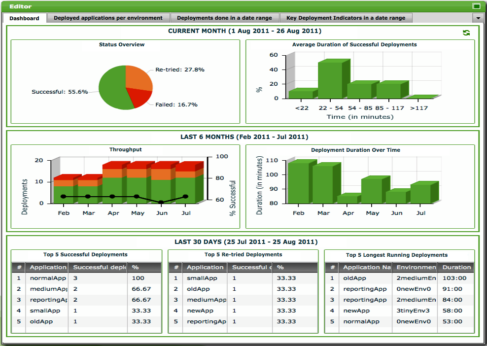

The Reports Screen
This screen is used report on data in the Deployit repository. The following shows an example of the Reports Screen when it is opened for the first time:

The screen consists of the following components:
- Report Window. This window is used to show generated reports.
The Report Window
The reports window displays a tab per report type. Deployit supports these report types:
- Deployment Dashboard. Shows an overview of useful statistics about your deployments.
- Deployed Applications per Environment. Shows all deployed applications that were deployed in a certain environment at a particular date.
- Deployments done in a date range. Shows all deployments performed with Deployit in a particular date range.
- Key Deployment Indicators in a date range. Shows the key deployment indicators for deployments performed with Deployit in a particular date range.
The reports types will be described in more detail in the Deployit GUI Manual.